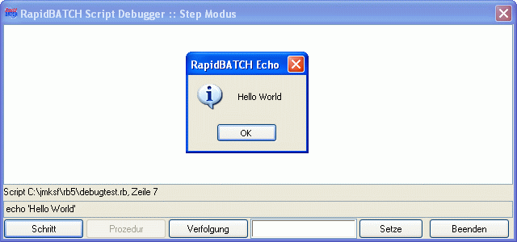

DEBUGMODE
DEBUGMODE
DEBUGMODE
DEBUGMODE
| Syntax: | DEBUGMODE Modus |
| Beschreibung: | Setzt den RapidBATCH-Debugger auf einen von drei Debug-Modi. Mögliche Parameterwerte sind STEP für schrittweises Debugging, TRACE für Verfolgungsdebugging und NONE, um den Debugger auszuschalten. Der Debugger kann somit vom Script selber mitten im Programm, z.B. an einer kritischen Stelle, gestartet oder beendet werden.  |
| Beispiele: | echo 'Ein Debug-Test...' rem Debugger starten debugmode step rem Weiter geht's im Debug Modus... echo 'Hello World' end |
| Bemerkungen: | Diese Anweisung ist nur im Interpreter der RapidBATCH Professional Edition enthalten. DEBUGMODE wird vom Compiler ignoriert und ist nicht in compilierten Programmen verfügbar. Sie können mit der Umgebungsvariablen RB_DEBUGMODE bereits vor dem Starten des Interpreters einen Debug-Modus festlegen. Mögliche Parameterwerte sind dabei dieselben wie bei der DEBUGMODE-Anweisung. |